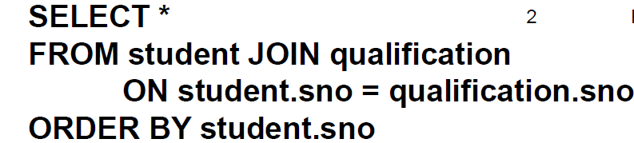
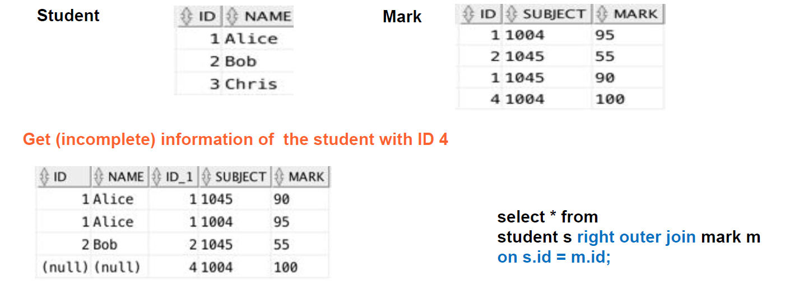
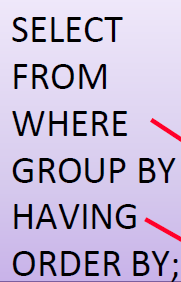
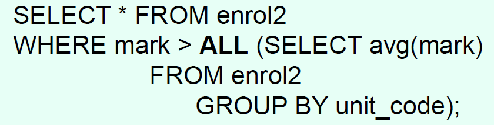
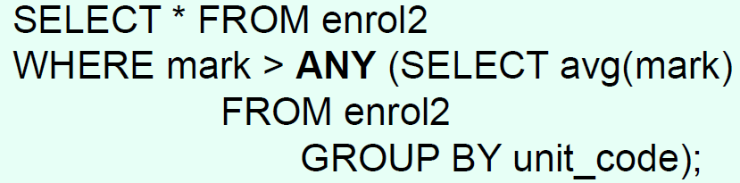
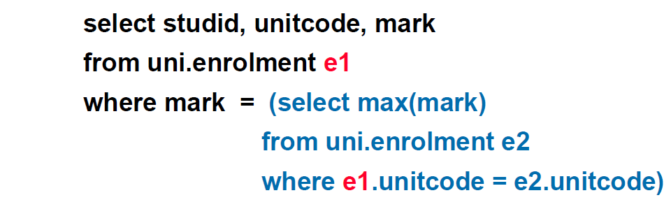
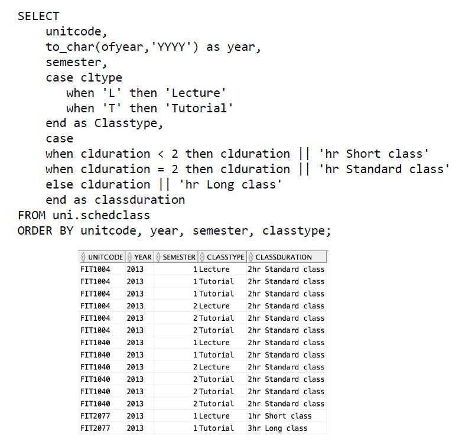

SQL
▪Single table retrieval with predicate
Comparison: =, != ,< >, <, >, <=, >=
Range: BETWEEN 1000 AND 3000 (both are inclusive)
IN: city IN ('Melbourne', 'Sydney')
Pattern Match: WHERE city LIKE 'M%'
WHERE unit_code LIKE 'FIT20__'
DISTINCT: SELECT DISTINCT stu_nbr
▪Join
–Natural join

ON：the general form which always works 总是有用的
USING：requires matching attribute names for the PK and FK
NATURAL：requires matching attribute names for the PK and FK
–Outer join
--The left outer join returns not only the rows matching the join condition (that is,
rows with matching values in the common column), but it also returns the rows in the
left table with unmatched values in the right table.左边的全部显示出来，不管有没有匹配成功
--Right outer join: 右边的表不管匹配成没成功全部显示出来
--FULL JOIN: 等于left join加上right join

▪Aggregate functions
--COUNT, MAX, MIN, SUM, AVG

The WHERE clause is applied to ALL rows in the table.
The HAVING clause is applied to the groups defined by the GROUP BY clause.
▪Set Operators
Union All –All rows selected by either query, including all duplicates 包括重复行
Union –All rows selected by either query, removing duplicates (e.g,, DISTINCT on Union
All) 直接整合起来，不包括重复行
Intersect –All distinct rows selected by both queries 只返回在两个里面都出现了的行
Minus –All distinct rows selected by the first query but not by the second
返回 只在第一个里面出现了但没出现在第二个里面的 行
▪Subquery
Operator for single value comparison. =, <, >
Operator for multiple rows or a list comparison.
–equality
IN
–inequality
ALL, ANY combined with <, >


Subquery可以与外部query相关

▪Oracle functions

–TO_CHAR, TO_DATE, NVL, UPPER, LOWER, ROUND
NVL:
TO_CHAR when selecting for display.
TO_DATE when comparing or inserting/updating.
Current Date: SELECT sysdate FROM dual;